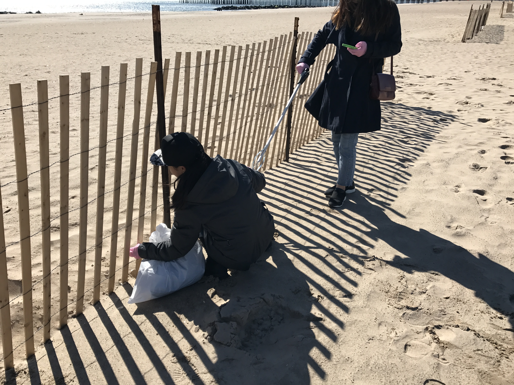
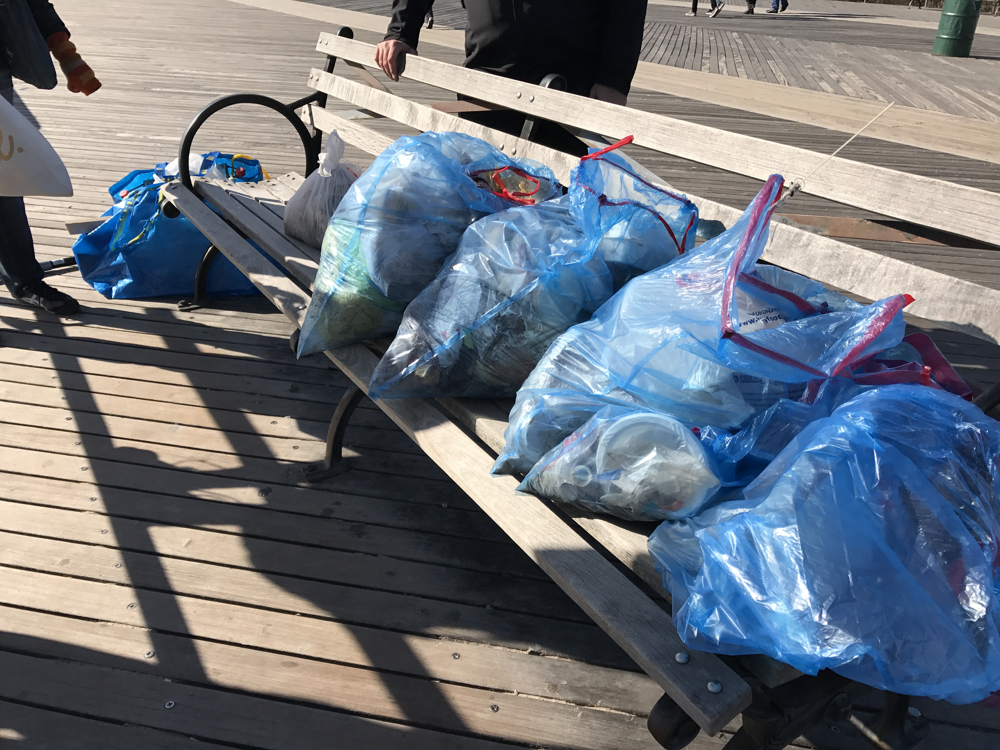
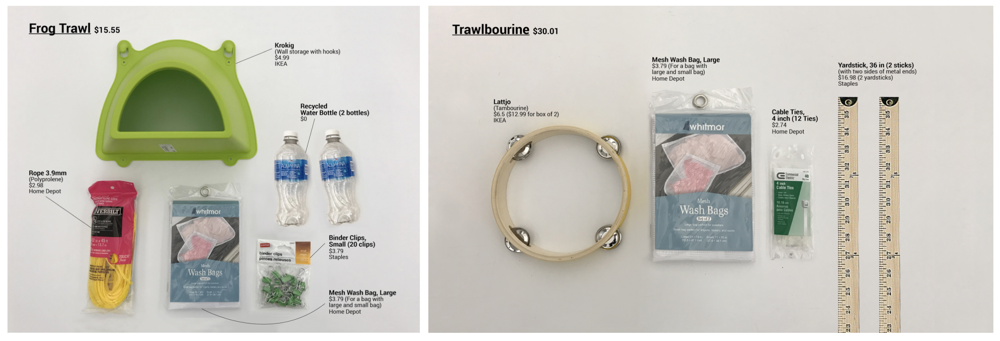

Trawl
Ocean cleaning tool to Test our water

A trawl is a wide-mouth fishing net that is designed to skim and drag on the surface of the water to collect plastics. The team is assigned to design/redesign a trawl base on inexpensive components from IKEA in order to allow ease access of materials to instruct world-wide.
http://www.instructables.com/id/Trawlbourine/
http://www.instructables.com/id/Frog-Trawl/
https://www.engineeringforchange.org/how-to-make-a-trawl-to-track-local-marine-plastic-pollution/
Group Members: Aimee Abalos, Pornsima Duangratana, Mi Sung Kim
Featured in:
Instructable & Engineering For Change
Collaboration:
Role
Designer
Problem
Marine pollution
It all started when we invented plastics. The time the plastic was introduced to the public, it serves as an substitute and also can serve more. As a generation where we are surrounded by plastic products, we are used to using plastics. We ignored the consequences. As the scientist invented plastics, did they ever think of its consequences on years or decades later? So, as a designer, do we designed things that can not foresee how it will affect as decades later? Who can replace plastics? How will it affect us in the future?


Design for Change

Field Research

Design & Assemble
Gather materials from IKEA. Then, create instruction sets on creating the trawl. Instruction can be found on the following links:
http://www.instructables.com/id/Trawlbourine/
http://www.instructables.com/id/Frog-Trawl/

Testing
Testing the new design trawls and reiterating for continuous improvement of the trawls' capabilities in different environments.
At the same time, the team gathers, collects and recycles the residue along, outside or inside water bodies to maintain green environment and protect marine life.